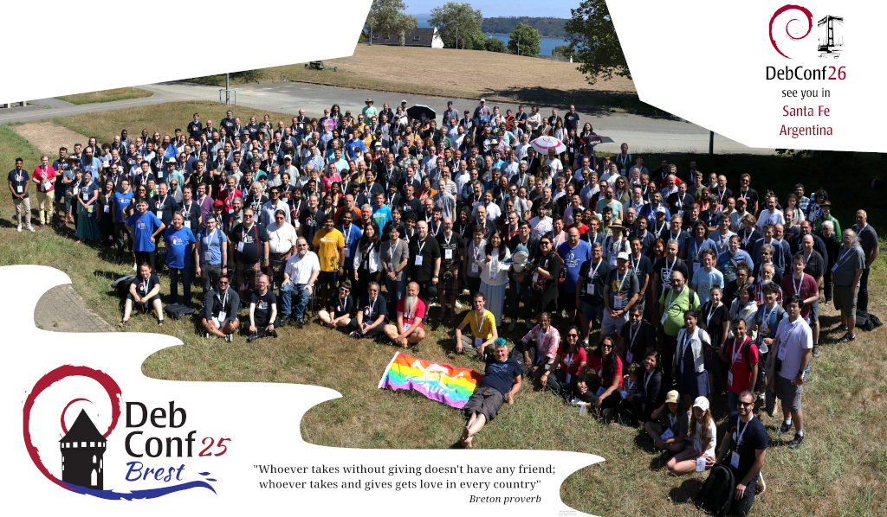
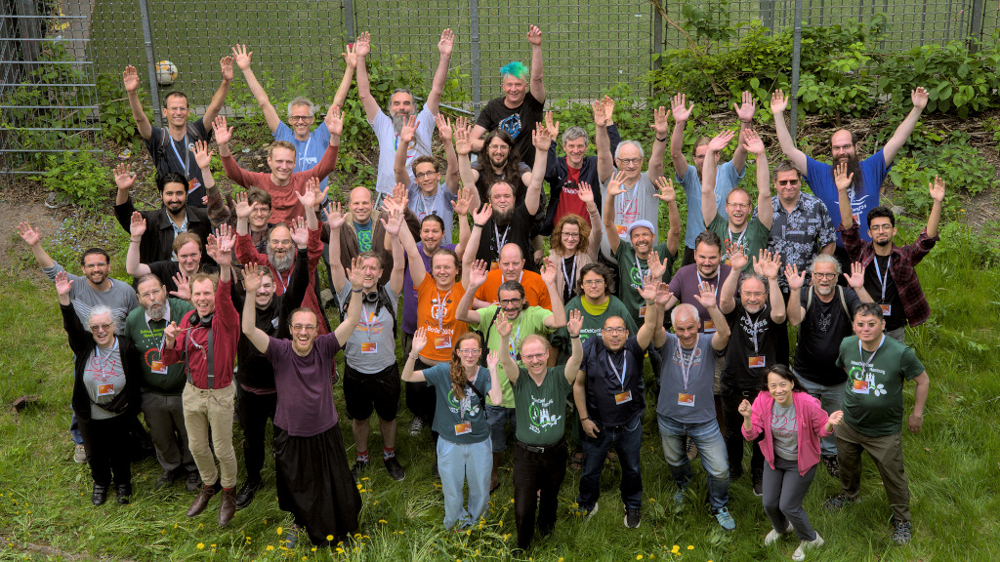
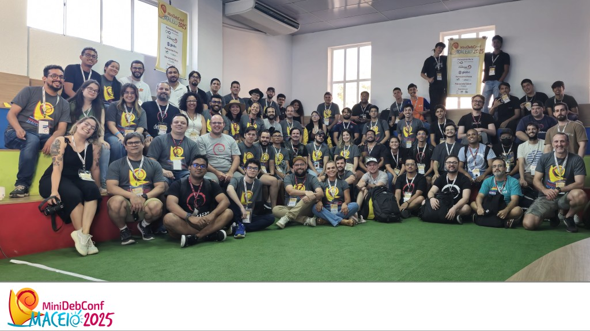
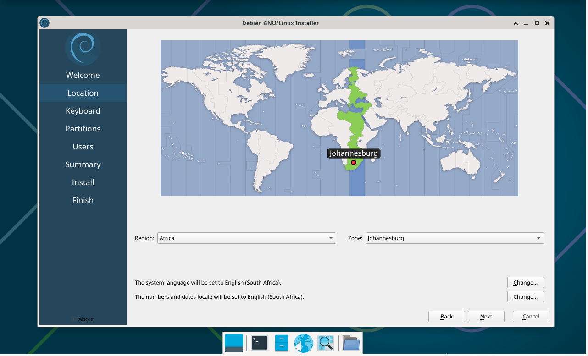

The Operating System
Debian is the ideal choice for you if you looking a stable and reliable operating system. It is used by millions of people around the world and is known for its long-term stability and security. It is trusted by developers, businesses, and governments for critical systems.
The Community
Debian is a complete Free Operating System!






About the community
People
Who we are and what we do
Our Philosophy
Why we do it, and how we do it
Get Involved, Contribute
How you can join us!
More...
Additional information about the Debian community
About the operating system
Why Debian
What makes Debian special
User Suport
Getting help and documentation
Security Updates
Debian Security Advisories (DSA)
More...
Further links to downloads and software